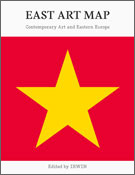

basekamp space > Events
East Art Map: IRWIN / NSK
Video screenings
IRWIN presentation
EAM project
EAM online
EAM Book
About IRWIN / NSK
EAM book:

East Art Map: Contemporary Art and Eastern Europe
edited by IRWIN
Reconstructing the missing history of contemporary art, art networks, and art conditions in Eastern Europe from the East European perspective.
The artistic map of Europe contains different degrees of detail and resolution. Italy, France, and Spain are presented in fine grain, but the Balkan peninsula is little more than a vague outline. England, Germany, and Scandinavia have many features filled in, but to the east of Germany things are blurred. Until recently, cities like Sofia, Odessa, Skopje, and Belgrade had next to no definition. Further to the East, Moscow comes into focus, but this is no compensation for the Baltics, sentenced for the last halfcentury to blank space.
In the West, virtually every move of the artist, the art market, and the art public is documented. But in Eastern Europe, no such system of documentation or communication exists. Instead, we encounter systems that are not only inaccessible to the West, but incongruous from one country to the next. Beside the official art histories there is often a whole series of stories and legends about “unofficial,” unapproved art and artists. East Art Map: Contemporary Art and Eastern Europe is an ambitious attempt to reconstruct the missing histories of contemporary art in Eastern Europe from an East European and artistic perspective. It is perhaps the widest ranging art documentation project ever undertaken by the East on the East, involving a large network of artists, scholars, curators and critics coordinated by the IRWIN group over several years.
The editors invited eminent art critics, curators, and artists to present up to ten crucial art projects produced in their respective countries over the past 50 years.The choice of the particular artworks (many of them reproduced in colour), artists, and events, as well as their presentation, was left exclusively to the individual selectors. In addition, the editors asked experts from both East and West to provide longer texts offering cross-cultural perspectives on the art of both regions.
An Afterall book /distribution MIT Press
536 pages
more than 250 color and b&w reproductions
24 selectors
17 essays
selectors and writers:
Inke Arns, Vladimir Beskid, Iara Bubnova, Calin Dan, Ekaterina Degot, Branko Dimitrijevic, Lilia Dragneva, Marina Gržinic, Sirje Helme, Marina
Koldobskaya, Suzana Milevska, Viktor Misiano, Edi Muka, Ana Peraica,
Piotr Piotrowski, Branka Stipancic, János Sugár, Jiri Ševcik, Miško
Šuvakovic, Igor Zabel, Nermina Zildžo
Lutz Becker, Susan Buck-Mors, Roger Conover, Eda Cufer, Michael Fehr, Boris Groys, Jürgen Harten, Sergej Kapus, Erden Kosova, Rastko Mocnik, Andreas Spiegl, Slavoj Žižek